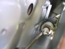
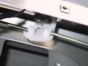
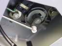
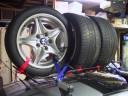
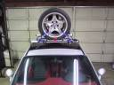
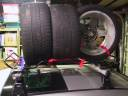
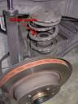
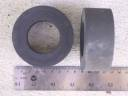
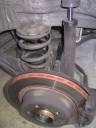

Projects
|
- Fixing the rear latch:
One of the little annoyances on
the BMW M Coupe is that the latch on the rear hatch is
under-engineered. (in English: it's crap). After my dealer
replaced 3 broken latches, and failed to install the fix that I had
printed out from the web, I fixed it myself using Ron Stygar's special
made replacement parts.
  
Reference Links:
- Gary's Mirror Adapter:
Another annoyances of the BMW M Coupe is the rear view
mirror. It sits too low and is somewhat large, blocking the driver's
view to the right. You can compensate somewhat by lower the seat, but
it still creates a big blind spot.
In particular the stock mirror perfectly blocks the view of apex 8b of the corkscrew
at Laguna Seca. Not good.
That's where Gary's Mirror Adapter comes
in. It replaces the stock mirror with a slightly smaller mirror that
can be adjusted higher and out of the driver's forward line of sight.
To see a picture of the mirror installed, click here.
- Roof rack for transporting track tires:
I purchased a second set of track wheels and tires from Kevin Baillie (AKA Animboy on
the roadfly.org forums). So, I needed a way to transport them to the
track. Mounting them on a roof rack is the route I chose.
I used the official BMW roof rack, which is a great rack
that bolts right on to the roof. Literally: the Z3 Coupe has recessed
bolt holes for the roof rack. I also bought the official BMW small
luggage rack. I strongly advice against the BMW luggage rack, it is a
P.O.S. It's made of flimsy aluminum tubing that is poorly joined. I had
to remove the center cross bar so that the tires wouldn't roll
off. Then I had to reinforce all the remaining bars by lashing them
together with heavy nylon straps and clove hitches. (check your Boy
Scout Handbook on how to tie a clove hitch.)
Update: I've removed the BMW luggage rack and
replaced it with a pair of 1/4" solid steel rods. I re-used the
connectors from the luggage rack to attach the two rods to the roof
rack. The steel rod is much stronger than the aluminum tubing.



Reference Links:
- Brake rotor replacement:
Oct, 2002
After a couple of track events, I got good enough to
really carry some speed out of the corners and down the
straights. However, I'm not as confident (yet) about carrying all that
speed into the corners. So, as a consequence I'm pretty rough on
brakes. If you think about it, all that BMW M engine horsepower is
getting transformed into heat in the brakes. That's a lot of heat!
After paying dearly for one brake rotor swap at Dinan, and
then trashing it at the next track event, I opted to do the next rotor
replacement myself. I opted for slotted frozen rotors and stock
pads. If I had it to do over, I would have bought the Euro floating
rotors and Pagid pads. (Hopefully "next time" won't be too soon!) The
first rotor took about 6 hours because I spent a long time fretting
about torques, not knocking the car off the jack stands, and not
getting brake cleaner all over the rubber gaskets. The second rotor
only took 2 hours. I'm not quite ready to open my own garage yet, but
everything is torqued to spec, works, and no brake squeal!
Jan 26, 2003:
Just finished replacing the rear rotors with stock BMW
rotors, as well as new pads. I ordered them from
South Motors BMW in Miami. Very reasonable prices ($60 each for the
rotors). This time it was a piece of cake compared to the first rotor
swap. About 2 hours total and that included bleeding the rear brakes.
Reference Links:
- Discovering suspension shipping spacers still in your rear suspension, after 16k miles!



- Brake Ducting Project
I got tired of all the pad transfer I was getting at track
events, so I installed brake ducts for the front brakes. I bought the
kit from Bimmerworld.com. Getting the
existing backing plates of is a pain. The Bimmerworld instructions
have you cut/tear the off, which is fine. They suggest using a Dremel
tool to do some of the cutting, but a sawzall might the way to go.
After that its smooth sailing until you get to the part where you need
to install the ducts into the existing brake duct air intakes. I
spent a fair amount of time visualizing the path the ducting would
take before I starting drilling and cutting on the stock setup. In the
end I ended up modifying the plastic wheel well liner to make more
room for the brake ducting. This greatly reduced tire rubbing against
the ducting when the wheels were turned. In fact I get almost no tire
rub even at full steering lock. So I'm very happy with my
installation.
After my first track event with them, I had no problems with the front
brakes. This was at Thunderhill in 98 degree weather, with 30 minute
sessions. No brake fade and no pad transfer. The rear brakes did get a
little pad transfer. So, I'm thinking I'll do something to keep the
rear brakes cooler too. I'm going to try removing the rear rotor
splash guard, to improve the ventilation.
- General Maintenance
Replaced the transmission fluid and differential fluid. I
followed the how-to guide written by Ron Stygar to change the transmission fluid and to
change the differential fluid. The directions are spot on. I
will add that when draining the transmission fluid, be careful. It has
a mind of its own. It seemed to defy the laws of physics when it came
out, and just splattered all over the place. only about 50% went into
the pad directly below the drain plug. Yuck.
On the M coupe changing the rear differential fluid is a snap. The drain and fill plug are easily accessed from the back. You could even do this without jacking up the car. I found a source for the Facom 14mm hex drive socket needed to remove the differential drain & fill plugs: Facom part # D107-14 for about $7.30.
- What's Next?
Probably an oil cooler. The S52 engine needs one, especially for long track sessions.
|
My Favorite M Coupe and Driving Links
|
|
|
Last modified: Sun Feb 8 22:33:16 PST 2004
by: Bryn Dole, ( bryn @ dole . nu )
|
|
{kind=link}
{kind=link}
{kind=link}
{kind=link}
{kind=link}
{kind=link}
{kind=link}
{kind=link}
{kind=link}
{kind=link}
{kind=link}